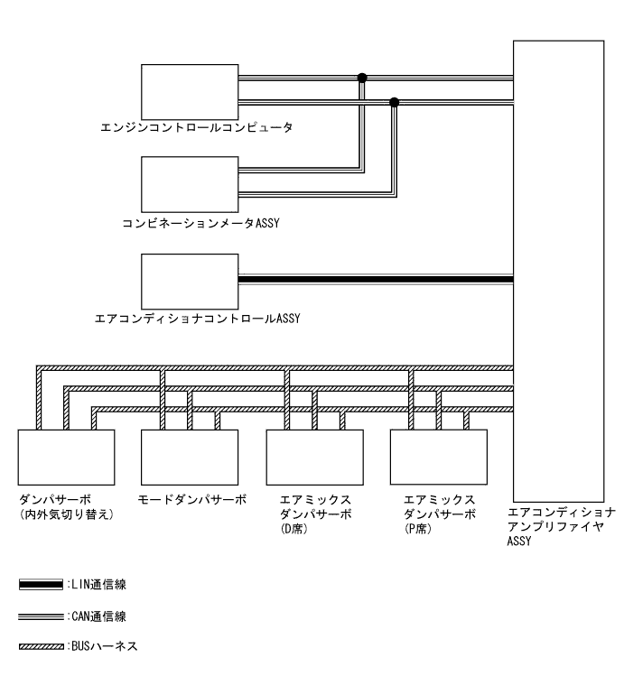
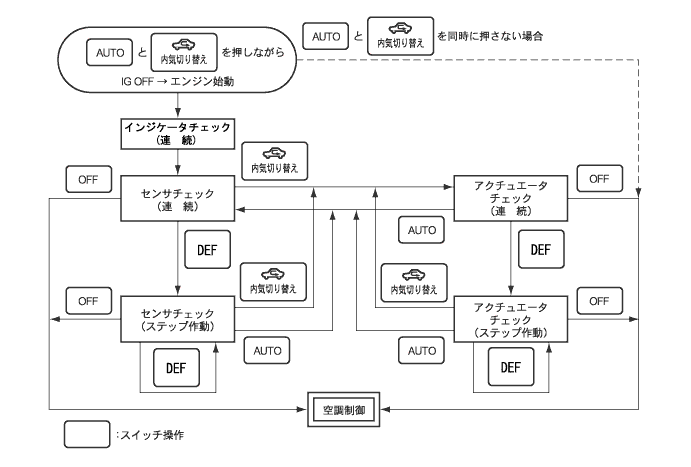

Heater & Air Conditioner System Function Description |
The heater & air conditioner system sends and receives signals to and from the engine control computer and combination meter assembly via CAN communication. Also, signals are sent and received with the air conditioner control assembly via LIN communication. Also, the bus harness provides communication with the operating motors used for air conditioning control: the damper servo (air inlet control), air mix damper servo and mode damper servo.

Functions of Diagnostic Tool SST (TaSCAN)
By connecting the diagnostic tool SST (TaSCAN), the heater & air conditioner system can perform the checks shown in the table below.
| Check Details | Description |
|---|---|
| Diagnostic Trouble Code (DTC) | Reading and clearing of DTCs is possible |
| ECU Data Monitor | ECU data can be checked, recorded and played back |
| Active Test | Actuators can be driven as desired |
Panel Diagnosis Functions
By starting the panel diagnosis, the heater & air conditioner system can perform the checks shown in the table.

| Check Details | Description |
|---|---|
| Indicator Check | Operation indicators of each switch and the setting display can be blinked |
| Sensor Check |
|
| Actuator Check | Actuator check patterns can be output |